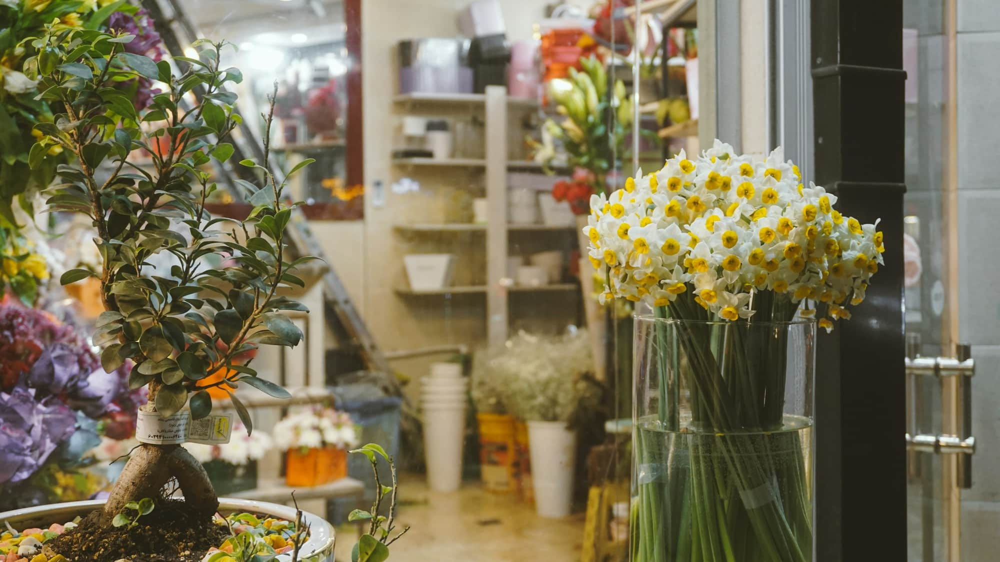
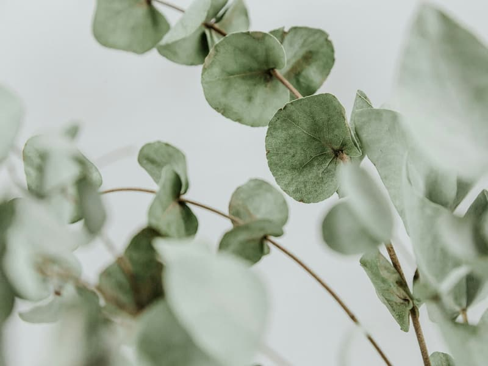
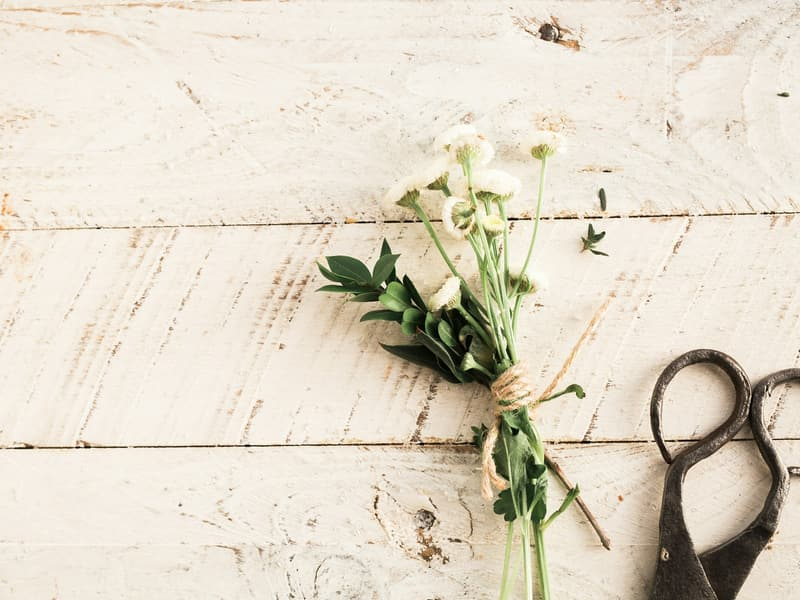

Букети
Складаємо на місці, під привід і під бюджет.
оцінка при замовленні
Квіткова крамниця · Kielce
Букети й композиції, зібрані на місці, у Кельце, за кілька кроків від вокзалу.
5,0 · оцінка в Google — 101 відгук
Послуги
Загальний опис. Конкретні композиції, сезонні квіти й ціни доповнимо після розмови.
Складаємо на місці, під привід і під бюджет.
оцінка при замовленніНа урочистості та особливі випадки — краще домовитися заздалегідь.
оцінка при замовленніСкажіть, з якого приводу і в якому бюджеті — решту складемо ми.
оцінка при замовленніОцінка Ціна залежить від квітів, сезону й розміру композиції — тому ми називаємо її при замовленні, а не за прайсом, який за тиждень був би застарілим.
Про нас
Aflora працює на площі Незалежності 1 в Кельце. 101 відгук і середня 5,0 — сто одна людина оцінила, і жодна не мала зауважень.
Квіти купують поспіхом, дорогою, часто з телефоном у руці. Розташування біля вокзалу — перевага, але лише якщо вас знайдуть.
Ця сторінка дає адресу, телефон і можливість замовити телефоном — без пошуку по каталогах.



Ілюстративні фото за вільною ліцензією (Unsplash). Повний список авторів і джерел: CREDITS.md.
Години роботи
Робочий тиждень
Вихідні
Години потрібно уточнити у власника — у картці Google їх немає.
Адреса
plac Niepodległości 1, 25-560 Kielce
Найшвидше телефоном — досить приводу й бюджету.